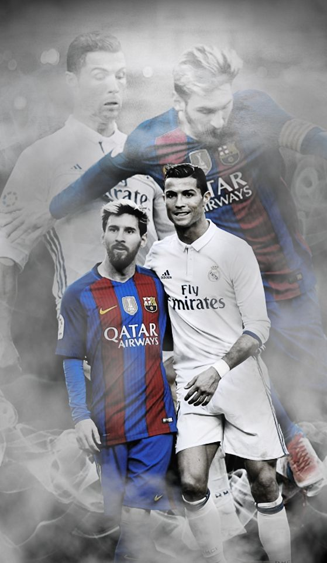
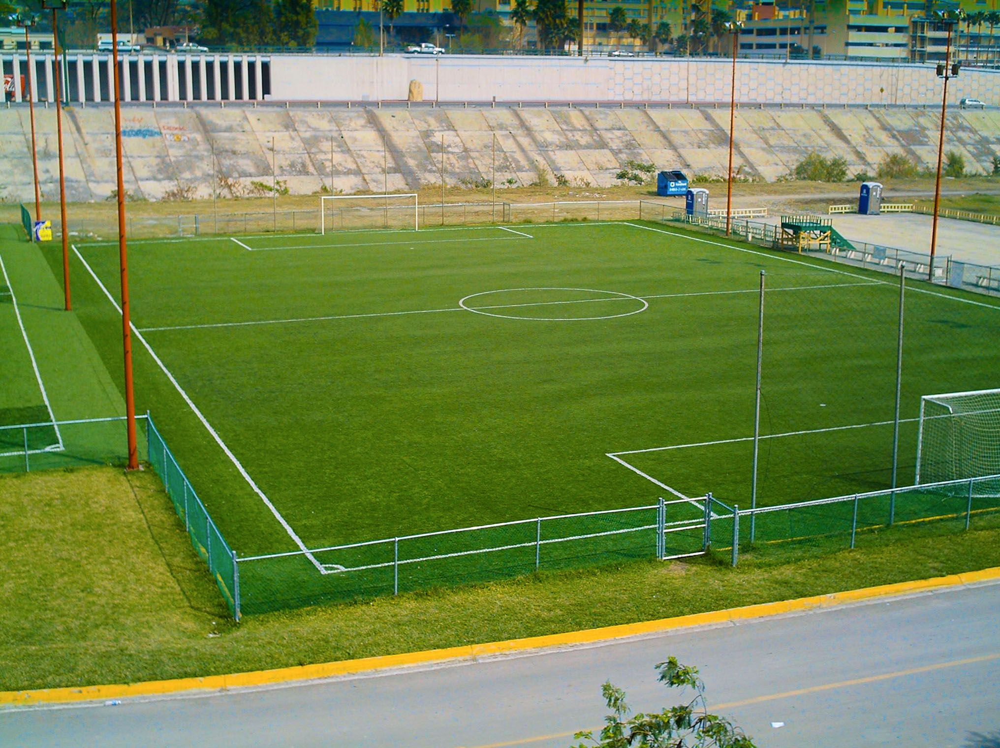

OLIMPIADAS -FUTBOL
Que es el futbol
El fútbol es un deporte de equipo en el que dos conjuntos de once jugadores compiten para marcar más goles que el adversario, introduciendo un balón en la portería contraria. Se juega en un campo rectangular con una meta en cada extremo y las reglas principales prohíben el uso de las manos, excepto para los porteros dentro de su área. Es el deporte más popular del mundo, conocido por su capacidad de unir a personas de diferentes culturas y por su emocionante dinámica de juego.
Imagenes
  ENTREVISTAReferenciales del futbol
- 1. Fútbol y Sociedad
- 2. Tácticas y Formaciones
Frace 100%
"El fútbol no es solo un juego, es una pasión que se lleva en el corazón, un lenguaje universal que une a las personas y una lección constante de trabajo en equipo, esfuerzo y perseverancia."
PREGUNTAS PARA LA COMISION DE DEPORTE
CONCEPTO FINAL
Las olimpiadas escolares son un evento llevado a cabo en centros escolares con el objetivo de fomentar la actividad física, promover los valores del deporte y reforzar hábitos saludables entre el alumnado. Para ello, se ofrece una serie de actividades que se pueden llevar a cabo durante las olimpiadas deportivas escolares y que contribuyen al desarrollo integral de los estudiantes. es esencial para la salud física y mental de los niños y niñas. Además, el ejercicio contribuye al bienestar emocional, la socialización y al rendimiento académico. Es por ello que eventos como las olimpiadas deportivas escolares son una buena oportunidad para fomentar la actividad física y ayudar a los estudiantes a crear una base de vida activa y saludable. El éxito de este evento no sólo se basa en saber qué son las olimpiadas escolares sino en una buena organización previa. Algunos aspectos fundamentales a tener en cuenta a la hora diseñar unas olimpiadas escolares Asignación de coordinadores: Para una buena planificación y ejecución y supervisión, es importante asignar responsables para la coordinación de las olimpiadas escolares. Estos pueden ser profesores de educación física, miembros del personal docente o miembros de familia voluntarios. Además, en función de la edad, también se pueden delegar ciertas tareas en estudiantes del centro. Selección de disciplinas deportivas: Otro aspecto importante es definir las disciplinas deportivas que se incluirán en las olimpiadas escolares. Es importante tener en cuenta el rango de edad, las diferentes habilidades y preferencias de los estudiantes con el objetivo de que todos puedan participar.